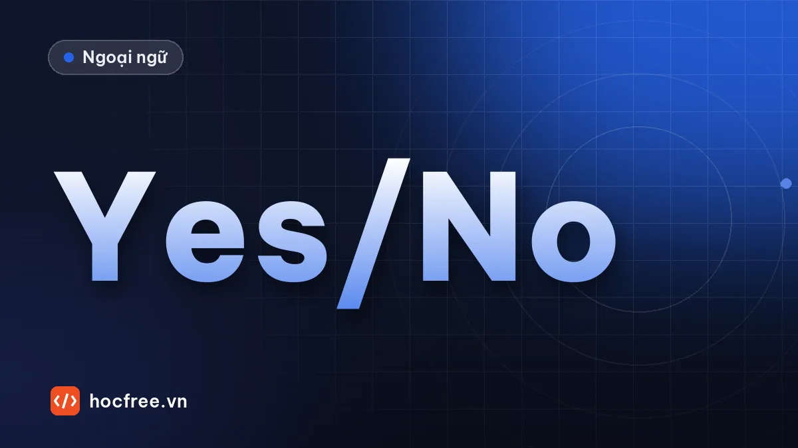

TOEIC Part 2: câu Yes/No, câu lựa chọn, đề nghị, trần thuật
Nhóm câu Part 2 khó hơn câu Wh-: Yes/No, câu hỏi đuôi, câu lựa chọn, lời đề nghị và câu trần thuật, kèm mẫu phản hồi để dùng khi giao tiếp.

Học xong bài này, bạn sẽ
- Xử lý câu Yes/No, câu hỏi đuôi, câu phủ định
- Trả lời câu lựa chọn A or B và câu đề nghị
- Đoán đúng phản hồi cho câu trần thuật
Nên học trước: Part 2: câu hỏi Wh-
Nội dung bài viết
Bên cạnh câu hỏi Wh-, Part 2 còn có các câu khó đoán hơn: câu hỏi Yes/No, câu hỏi đuôi, câu hỏi lựa chọn, lời đề nghị và câu trần thuật (không phải câu hỏi). Với những câu này, bắt từ đầu câu không còn đủ, vì đáp án đúng phụ thuộc vào ý của cả câu. Tin tốt là cũng chính những mẫu này là thứ bạn dùng hằng ngày khi giao tiếp, nên học Part 2 cũng là học nói.
1. Câu hỏi Yes/No
Bắt đầu bằng trợ động từ: Do, Does, Did, Is, Are, Have, Has, Will, Can…
- Đáp án có thể là Yes / No + thông tin thêm: Did you send the invoice? → Yes, this morning.
- Nhưng rất thường gặp là đáp án bỏ Yes/No: Did you send the invoice? → I'm doing it now. / Mr. Ho said he would.
- Bẫy: đáp án có Yes nhưng phần sau mâu thuẫn hoặc không liên quan: Yes, it's a big invoice.
2. Câu hỏi phủ định và câu hỏi đuôi
Isn't the meeting at 2? / The meeting is at 2, isn't it? / Haven't you finished the report?
Cách xử lý đơn giản nhất: bỏ phần phủ định và phần đuôi, coi như câu hỏi thường. Isn't the meeting at 2? = Is the meeting at 2? Trả lời Yes nếu đúng là 2 giờ, No nếu không.
Q: You've met our new manager, haven't you?
(A) Yes, at the orientation last week. ✓
(B) The manager's office. ✗
(C) We'll meet at 10. ✗ (lặp âm meet)
3. Câu hỏi lựa chọn: A or B?
Would you like tea or coffee? / Should we take the bus or a taxi?
- Thường không trả lời bằng Yes/No.
- Đáp án đúng có thể chọn A, chọn B, chọn cả hai (Either is fine.), không chọn cái nào (Neither, thanks.), hoặc đưa lựa chọn thứ ba (Actually, let's walk.).
- Đáp án chọn A hoặc B thường dùng từ khác để paraphrase: Do you want the report printed or e-mailed? → A digital copy is fine. (= e-mailed)
4. Lời đề nghị, yêu cầu, rủ rê
| Mẫu câu | Chức năng | Đáp án đúng thường gặp |
|---|---|---|
| Could you / Would you / Can you…? | Nhờ làm gì | Sure. / No problem. / I'd be happy to. / Sorry, I'm busy right now. |
| Would you like…? / Do you want me to…? | Mời, ngỏ ý giúp | Yes, please. / That would be great. / No, thanks, I can manage. |
| Why don't we…? / Let's… / How about…? / What about…? | Rủ, đề xuất | Good idea. / That sounds good. / I'm afraid I can't. |
| Would you mind…? | Xin phép, nhờ | Not at all. / Of course not. (= không phiền, đồng ý) |
5. Câu trần thuật
Không phải câu hỏi, chỉ là một câu nói: The printer is jammed again. / I can't find my badge. / The client wants to change the design. Đây là loại khó nhất vì không có từ để hỏi nào để bám. Đáp án đúng là phản hồi tự nhiên:
| Câu nói | Phản hồi tự nhiên |
|---|---|
| The printer is jammed again. | I'll call the technician. / Use the one on the second floor. |
| I can't find my security badge. | Did you check your car? / The front desk can give you a temporary one. |
| Our sales doubled last quarter. | That's great news! / The new campaign really worked. |
| The client wants to change the design. | Again? / Let's discuss it at the meeting. |
Cách luyện: nghe câu nói, tự hỏi "nếu đồng nghiệp nói câu này với mình, mình sẽ nói gì?". Đáp án đúng thường là hành động tiếp theo, câu hỏi lại hoặc lời bình luận.
Luyện tập
1. Have you reviewed the budget proposal? (A) I'll finish it this afternoon. (B) The budget is tight. (C) It was proposed last year.
2. Isn't Ms. Kim joining us for dinner? (A) The restaurant is nearby. (B) She has another appointment. (C) Yes, I joined last month.
3. Should I send the samples by courier or regular mail? (A) Yes, please send them. (B) Courier, since they're urgent. (C) Some free samples.
4. Why don't we hold the meeting online? (A) Because it was canceled. (B) That would save time. (C) It's on the agenda.
5. Would you mind checking these figures? (A) Not at all. (B) Yes, they're correct numbers. (C) I didn't check out.
6. The air conditioner in the meeting room isn't working. (A) It's very cold outside. (B) I'll report it to maintenance. (C) He's working in the meeting room.
7. You're coming to the trade show, aren't you? (A) It's a big show. (B) I'm still waiting for approval. (C) We traded it last week.
8. Could you help me set up the projector? (A) Sure, give me a minute. (B) It's a new project. (C) In the main hall.
Xem đáp án và giải thích
- A – bỏ Yes/No, ngụ ý chưa xem xong. (B), (C) lặp từ budget, propose.
- B – câu hỏi phủ định; đáp án ngụ ý cô ấy không đi. (C) lặp âm join.
- B – câu hỏi lựa chọn, chọn A kèm lý do. (A) Yes/No không hợp.
- B – lời đề xuất; (A) bẫy Because.
- A – Not at all = không phiền, sẵn lòng.
- B – câu trần thuật, đáp án là hành động tiếp theo. (C) lặp từ working, meeting room.
- B – câu hỏi đuôi, đáp án gián tiếp: chưa chắc đi. (C) lặp âm trade.
- A – lời nhờ; (B) lặp âm project.
Luyện phản xạ. Đọc to từng câu dưới đây, rồi nói ngay một câu đáp trong vòng 3 giây, không cần hoàn hảo: (1) Could you send me the file again? (2) Let's take a short break. (3) The shipment arrived damaged. (4) Do you know where Mr. Long is? (5) Would you like me to book the meeting room?
Xem câu mẫu
(1) Sure, I'll send it right now. (2) Good idea. Ten minutes? (3) Oh no. Did you take photos? (4) I think he's in a meeting. (5) Yes, please. For 2 o'clock, if possible.